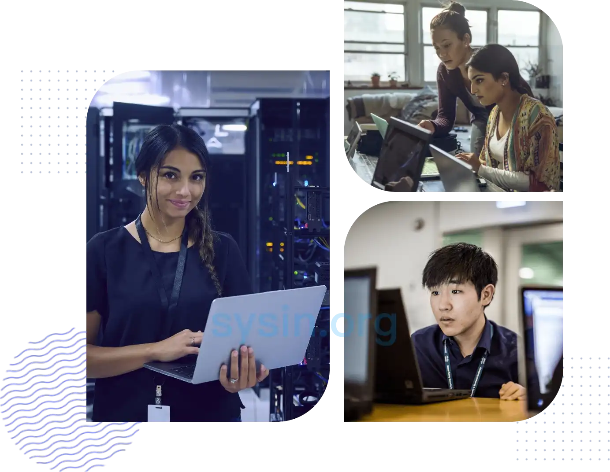
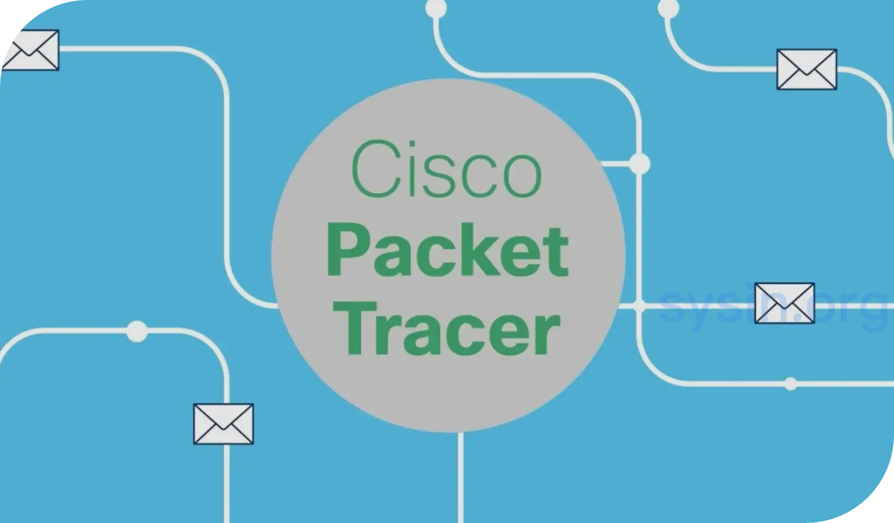

请访问原文链接：Cisco Packet Tracer 9.0 (macOS, Linux, Windows) - 思科网络模拟工具 查看最新版。原创作品，转载请保留出处。
作者主页：sysin.org
Cisco Packet Tracer
Cisco Packet Tracer 是思科强大的网络模拟工具，它能让您在虚拟实验室中练习网络、物联网 (IoT) 和网络安全技能，无需购置任何硬件即可学到货真价实的技能！该工具不仅能直观地为您呈现网络的运作方式，还提供实验环境来供您练习机架安装、堆叠和布线技能，并动手集成物联网设备、Python 代码和其他功能 (sysin)。免费下载最新版本的 Cisco Packet Tracer，开启趣味十足的学习之旅吧！

Cisco Packet Tracer 是什么？
Cisco Packet Tracer 是一款面向教师和学生的综合模拟软件。该工具的独特之处在于，它将逼真的模拟和可视化体验、考试和活动创建功能，以及多用户协作和竞赛功能集于一身。Cisco Packet Tracer 的创新功能可以帮助学生和教师在富有吸引力的动态社交环境中开展协作，解决问题，并学习概念。

为什么要使用 Cisco Packet Tracer？
在虚拟实验室中练习网络、网络安全和物联网技能。
7,689,570+
用户注册了 Cisco Packet Tracer 课程
400 万
人在全球各地使用了 Cisco Packet Tracer（2017 年至今）
利用 Cisco Packet Tracer 解决各种问题
无论您是希望传授基础知识、培养技术技能、用设计项目来考验学生，还是帮助学生提高故障排除能力，Cisco Packet Tracer 灵活的环境都能满足您的教学需求。请深入了解 Cisco Packet Tracer 支持的四种常见用例，以及学生可以通过每种用例学到的主要技能。
🌐 传授基础知识
主动学习如何通过创建模型、编写说明和制作动画的方式阐述网络概念。
主要技能
- 理解网络理论和网络概念，例如 OSI 模型、TCP/IP 协议和子网划分
- 以可视化方式展示网络拓扑和数据流，形成逻辑和抽象思维
- 了解如何绘制和解释网络图和原理图
- 清晰有效地解释和传递复杂的网络概念
🌐 培养技术技能
运用算法逻辑解决问题，培养程序性知识。
主要技能
- 配置和管理路由器、交换机、防火墙等网络设备
- 掌握程序性知识，包括网络设置、IP 寻址、路由协议和 VLAN 配置
- 通过条理清晰的核心网络练习提高解决问题的能力
- 熟练使用网络模拟工具 (sysin)，在受控环境中磨炼技能
🌐 设计挑战赛
运用理论知识解决现实世界中不只有一种正确解决方法的限制性问题。
主要技能
- 能够运用创造力和创新思维，构思出满足特定业务需求的网络设计
- 对特定问题的不同解决方案做出评估，培养决策和批判性思维能力
- 了解网络设计对网络的可扩展性、可持续性和用户体验有哪些影响
- 对设计方案进行测试、反思和迭代改进，以更好地模拟真实场景
🌐 鼓掌排除挑战赛
运用技术能力解决问题，在模拟网络中诊断、隔离并修复存在漏洞的网络文件。
主要技能
- 通过系统性分析诊断并解决网络问题
- 了解如何使用诊断工具和命令来查明并解决网络问题
- 了解如何按流程解决网络连接故障，使网络恢复正常功能
- 对故障排除流程和解决方案进行记录，以帮助提高口头和书面沟通能力
新增功能
Packet Tracer 9.0.0 是一次重大更新。它旨在应对工业（OT）网络面临的日益增长的网络攻击威胁，以及工业网络安全人才短缺的问题。Cisco 与 NTNU、WSUTECH、ATINA、GLVIA、AkerSolutions 和 Ford 合作构建新的工业网络基础课程 (sysin)，并开发了 Packet Tracer 9.0 工业实验。
目标受众为制造业与能源（电力）行业的学生，以及希望提升技能以应对工业网络安全挑战的网络工程师。
🌐 网络设备
Packet Tracer 9.0.0 新增以下网络设备和服务器，用于构建符合 Purdue 模型的模拟网络：
路由：
- 全新 Cisco Catalyst IR8340 工业级路由器，配备 12 个 RJ45 接口和 2 个 PIM 插槽（P-5GS6-GL 用于 5G 蜂窝网络，P-LTEA18-GL 用于 3G/4G 蜂窝网络）
- 全新 Cisco Catalyst IR1101 工业级路由器，配备 6 个网络端口以及 1 个 PIM 插槽（可插 P-5GS6-GL（5G）或 P-LTEA18-GL（3G/4G）模块）
- 新的 Cisco 8200 系列边缘平台，设计用于 SASE、多层安全和云原生敏捷性
交换机：
- 全新 Catalyst IE-3400（IE-3400-8P2S-A）工业级多层交换机，带 10 个千兆端口 (sysin)
安全设备：
- 全新 ISA-3000 (ISA-3000-2C2F-K9) 工业防火墙，拥有两个 1GbE SFP 端口、两个 10/100/1000Base-T 端口以及一个管理端口
服务器：
- 全新数据历史服务器（Data Historian），可将 CIP 数据采集器接收到的数据存储在本地数据库
- 全新网络威胁观测服务器（类似 Cisco Cyber Vision），用于模拟网络威胁与防护机制。其仪表板能够通过配置设备固件版本与本地威胁数据库检测网络漏洞
🌐 OT 协议
Packet Tracer 现已支持以下工业 OT 协议：
- TCP/IP Modbus：支持基于以太网的 Modbus 通信
- Profinet（通过 PTINTERNAL 脚本模块模拟）
- CIP（Ethernet/IP）：支持身份和 TCP/IP 接口对象
- PTP 电力配置文件 (sysin)
- PRO
- IEC61850
- Goose
- SV
- MMS
- OPC-UA
- 梯形逻辑
- HMI/工作空间元素（Thinfs）
下载地址
Cisco Packet Tracer 9.0.0
macOS Intel x64 (系统要求：macOS 12+)
Linux x64 DEB (系统要求：Ubuntu 22.04 LTS+)
Windows x64 (系统要求：Windows 10+)

文章用于推荐和分享优秀的软件产品及其相关技术，所有软件默认提供官方原版（免费版或试用版），免费分享。对于部分产品笔者加入了自己的理解和分析，方便学习和研究使用。任何内容若侵犯了您的版权，请联系作者删除。如果您喜欢这篇文章或者觉得它对您有所帮助，或者发现有不当之处，欢迎您发表评论，也欢迎您分享这个网站，或者赞赏一下作者，谢谢！
 支付宝赞赏
支付宝赞赏  微信赞赏
微信赞赏赞赏一下
敬请注册！点击 “登录” - “用户注册”（已知不支持 21.cn/189.cn 邮箱）。 请勿使用联合登录（已关闭）。